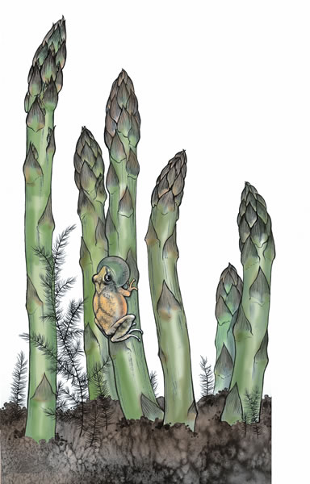
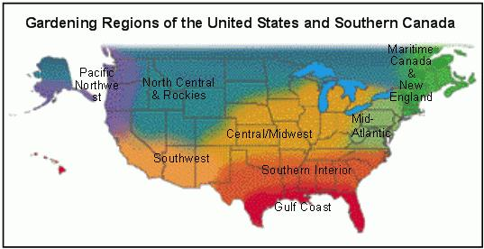
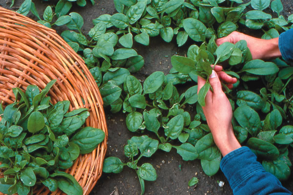
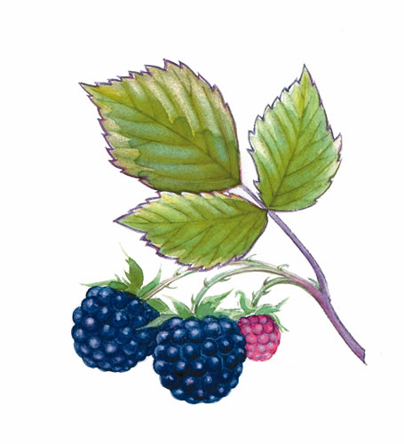

As days get a bit longer and warmer, the overwintered greens in the greenhouse are sprouting new shoots, and hens are laying more eggs. Still, gardens are as frozen as a hockey rink. Go skating to ward off the winter blues, then come in and make a pot of soup with any garden vegetables you have stored in the root cellar or freezer. It’s time to sort leftover seeds and place seed orders. Indoors, start celery, leek and onion seed in late February through March, followed by peppers in late March. In the orchard, dig down around tree trunks to check for rodent damage and cut some scion shoots from your fruit trees, which you can store and use for grafting later in the year. Late March brings snowdrops and snow crocuses along sun-warmed foundations, brightening our winter-weary hearts.
- Roberta Bailey, FEDCO Seeds, Waterville, Maine
Take advantage of a few cold days in early February to kill pests by “freezing out” your greenhouse, and then start lettuce, collards, Chinese greens, kale, peppers, eggplant and celery. Pre-sprout spinach seed or try ‘Bloomsdale Long Standing’ for better emergence in cold soil. When forsythia starts flowering in late February, it’s time to sow carrots, turnips, peas, beets and radishes. Pre-soak beet seed 30 minutes for even germination. Transplant hardy greens and fall-sown onions in early March - protected with fabric row covers - and start peppers, brassicas, scallions and early tomatoes. Pre-sprout seed potatoes for two weeks in bright light and at a cool temperature - they’ll be ready to plant by St. Patrick’s Day if the weather is suitable (usually when dandelions are blooming). Later in March, indoors, start the rest of your tomatoes - ‘Tropic’ and ‘Brandywine OTV’ are outstanding disease-resistant slicers for our area. Start zucchini and cucumbers in the greenhouse, and keep planting and harvesting cool-season crops.
- Ira Wallace, Southern Exposure Seed Exchange, Mineral, Va.
Broccoli, cabbage and cauliflower transplants started indoors a month or two ago are ready to plant outside as soon as the worst freezes are over-February in the most southern part of our region and March in the upper South and Piedmont regions. Sow seeds for kale, kohlrabi and English peas in February. At the end of the month, it’s time for some serious gardening! Plant beets, carrots, Swiss chard, celery, cress, endive, lettuce, mustard, parsley, parsnips, radishes, rutabagas, salsify, spinach and turnips. Start seeds for tomatoes, peppers and eggplant six to eight weeks before the last expected frost in your location. In the lower South, you can sow seeds for bush beans, pole beans, cantaloupe and honeydew after your last frost date. After the soil starts to warm, sow seeds for lima beans, sweet corn, cucumbers, squash and watermelon.
- Becky Wilder, Seeds for the South, Graniteville, S.C.
So much to do and so little time! February is a second planting opportunity for cool-season crops such as broccoli, cabbage, mustard, lettuce, snow peas, radishes, carrots and beets. Beginning in March, we set out tomato plants. Last year’s best producers in our garden were ‘Carmello,’ ‘Dona’ and ‘Champion,’ and they were also the best tasting. Set out pepper plants later in the month-one jalapeño and one ‘Big Bertha’ bell are enough for a small garden, and plant beans, corn, cucumbers and melons. Be sure to spray fruit trees with a dormant oil spray, a type of spray intended for use before the buds open. In early February, overwintering insects are at their weakest, and the oil should take out a large number of them. Inspect irrigation systems now before the dry season hits. Drip tapes rarely work well for more than one season, and drippers may need cleaning or replacement.
- Bill Adams, Burton, Texas
|
 JUDITH ANN GRIFFITH/COURTESY SEED SAVERS EXCHANGE Perennial asparagus provides one of the very first crops ready to harvest every spring. (That’s a spring peeper singing on the stalk.) |
 DAVID CAVAGNARO Thinning young spinach plants for salad greens allows for more vigorous plants later in the season. |
 |
|
 |
|
|